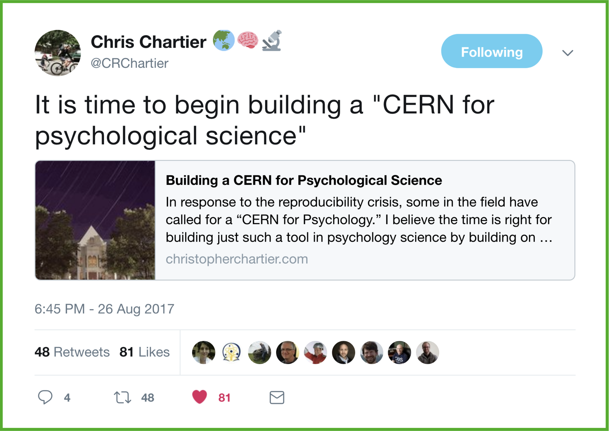
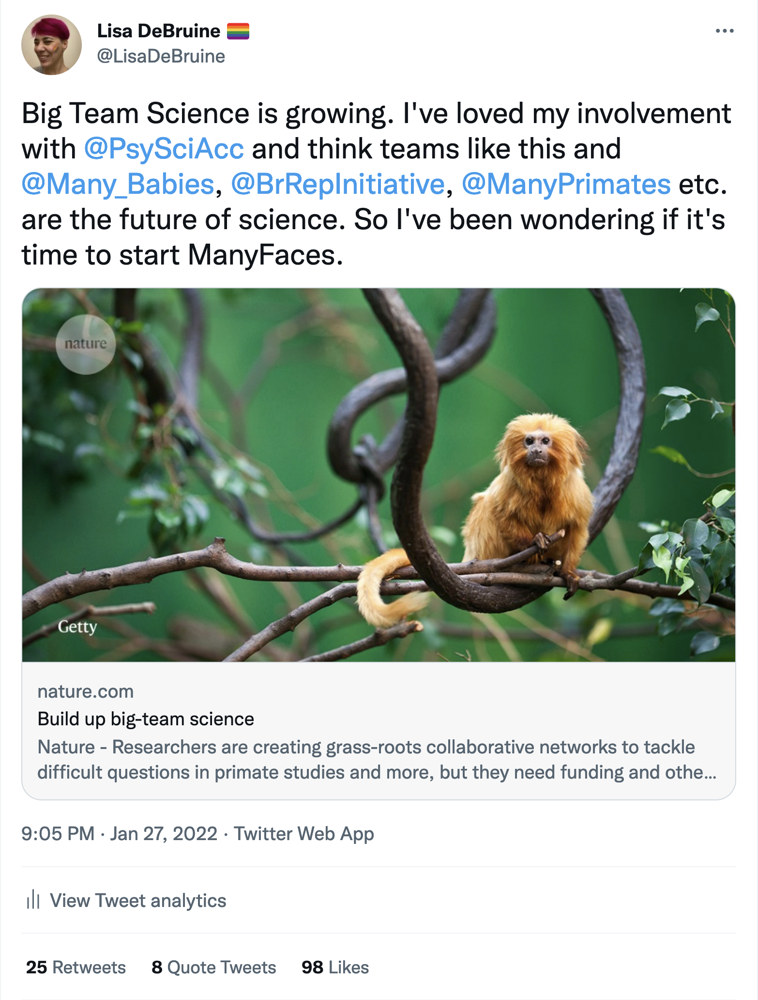
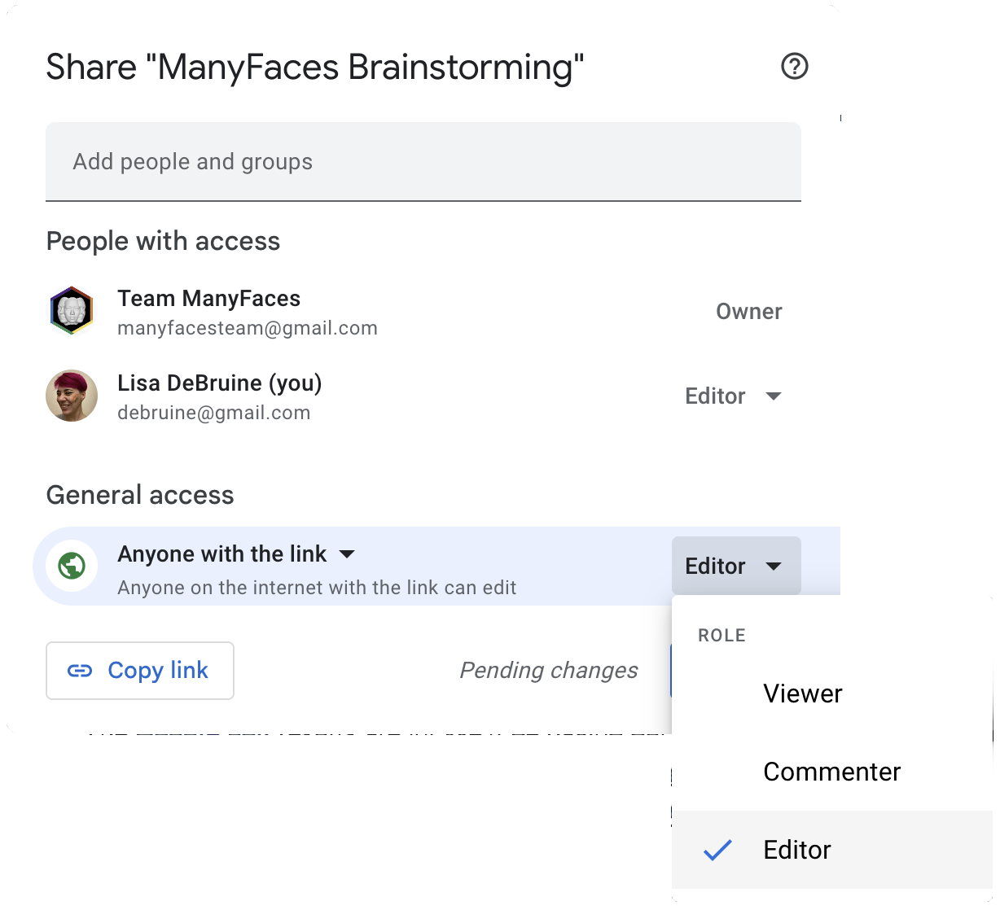

1 Recruiting Members
My involvement in the Psychological Science Accelerator started in 2017 with a tweet from Chris Chartier. And 5 years later, ManyFaces started with another.


Twitter or other social media is a great way to gauge interest in starting a big team science group. If you get a lot of interest, you need to be prepared to start organising quickly to keep that momentum.
1.1 Registering interest
You can set up a quick Google form to register interest in the group. That way, you can make a list of everyone who is interested in order to contact them later if you don’t have the time to start right away. It is also a way to centralise recruitment so you don’t have keep track of who is interested in twitter threads and emails and facebook posts…
Make the signup form short and sweet:
- Name
- Location/Institution
- Free text for comments
You can also ask a few specific questions. For example, the ManyFaces interest form asked:
Do you prefer to discuss by:
- Live Chat (e.g., Zoom)
- Asynchronous text chat (e.g. slack/Teams/shared Google doc)
What would you be interested in building with a consortium?
- Stimulus databases
- New stimulus collections
- New stimulus or study protocols
- Collaborate on data collection
- Other…
1.2 Brainstorming Document
One thing that worked really well for ManyFaces, and also for a Code Review Guide I recently organised, was to start a brainstorming document. This is a better way to collect and organise ideas than forum posts.
Google Docs are an ideal place to start a brainstorming document. Just set up a document and make sure to update the Sharing settings so anyone with the link can edit (or at least comment).

1.2.1 Structure
I would structure the brainstorming document with headers (actually use the heading styles so you can have a navigable outline) like this:
- Purpose: explain the purpose of the document and how to use it
- Announcements: reserve a space at the top for making announcements or adding tasks
- Core Values: what are the values that bring this group together?
- Contributors: introduce yourself, what you bring to the group, and what you hope to get out of it
- Resources: what do potential members have to contribute in terms of time, expertise, equipment, or materials?
- Questions/Goals: what are the questions this group will tackle, or overarching goals?
- Ideas: list all of your ideas for what the group could do; no idea is too big/small yet
- Challenges: what roadblocks do people see to getting this group up and running?
- Organising: list what needs to be done to get the group started (the rest of this guide should help with that)
1.2.2 Core Values
A list of core values can help make sure that people who join the group have aligned goals and values. You can get this started using the examples below and ask the group to help flesh them out.
ManyFaces Core Values
- Ethics
- Personal data protection
- Avoiding and speaking out against inappropriate use of AI/face recognition
- Diversity and Inclusion
- Diversity of region, career stage, discipline, methodology, gender, nationality, etc.
- Don’t just make “the rich get richer”
- Labs with more resources have a responsibility to help labs and individual researchers with fewer resources
- Transparency
- Resources and outputs shared as openly as ethics allows
- While not every member can be involved in every decision, the process of decision making should be available to all.
ManyBabies Principles
- Transparency: All decisions in a MB project, from design to publication, are as transparent as possible
- Collective governance: When possible and feasible, decisions are made jointly and transparently
- Inclusivity and diversity: MB explicitly encourages efforts to increase diversity. This includes active applications for funding to assist laboratories from under-represented communities to participate, outreach efforts, and planning workshops
- Ethical research: MB projects are committed to best practices and high ethical standards
- Respect: Everyone agrees to a general code of conduct which ensures respectful interactions
PSA Core Principles
- Diversity and inclusion
- Decentralized authority
- Transparency
- Rigor
- Openness to criticism
See the PSA website for more details.
1.3 Starting the Organisation
If signups and contributions to the brainstorming document are underwhelming, don’t worry. It might just not be the right time to start this group. Organising a big team science group is too much work for one person, so make sure you have a substantial enthusiastic membership and a dedicated core group.
If a lot of people register interest in starting a group, many of them contribute to the brainstorming document, and there is a core of people with the time, enthusiasm and ideas to help out now, it’s time to start organising! Your next step is to set up some governance.